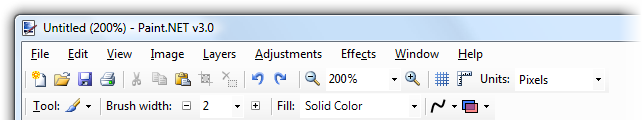
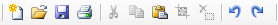
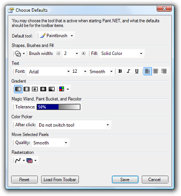
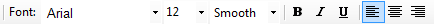
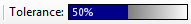
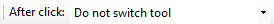
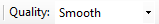
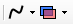
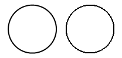

Toolbar
The toolbar contains buttons for accessing many common commands, controls for configuring how the image is viewed, and controls for configuring how many of the tools perform drawing.
- 
Common Actions

These buttons allow you to quickly perform many common actions. From left to right, they allow you to create a new image, open an existing one, save, print, cut, copy, paste, crop, deselect, undo, and redo.View Controls

These controls allow you to modify how the image is presented to you. The first two buttons let you zoom in or out, while the dropdown list allows you to set a specific zoom level. You may also choose the "Window" zoom level, which causes the zoom level to be maintained such that the entire image is always visible (this is the same as selecting the View → Zoom to Window menu option).The next two buttons toggle the visibility of the grid and the rulers, respectively. The last control lets you specify whether you wish to work with measurements in pixels, inches, or centimeters. This does not change the units that are stored in the image; you may change those using the Image → Resize menu command.
Tool Choice

The second row of the toolbar starts with a button that lets you choose the current tool. If you click on this button you will be presented with a list of possible tools, as well as a command called "Choose defaults." Clicking on it will bring up this dialog:

This dialog may be used to set all of the default toolbar item settings. You may also change which tool is made active when Paint.NET starts up. The "Reset" button will reset all of the values to the defaults, while "Load from Toolbar" will take the settings that are in the current toolbar and apply them to the settings in this dialog.
Previous versions of Paint.NET would automatically remember some settings in the toolbar between sessions, such as those for antialiasing and color tolerance. In version 3.0, none of the toolbar settings are automatically remembered. If you want a toolbar setting to be remembered then you must manually change it through this dialog and then press the "Save" button.
Tool Configuration
After the Tool button, the rest of this row contains controls that let you adjust how the current tool operates. There will always be a combination of the toolbar controls from the "Choose Defaults" dialog shown above. Each section is discussed below.
Shapes, Brushes and Fill

The Shape Tools use these controls. Here you can select if the shape should be drawn with its outline, interior, or both, the size of the brush stroke, and the fill style.
Text

This section of the toolbar is only used by the Text tool, and lets you configure the font family, size, rendering method, and style.
The two rendering methods are "Smooth" and "Sharp." The Smooth rendering method is optimized for medium to large text. At small text sizes it may look fuzzy or blurry, although this will depend on the font being used. The Sharp rendering method is well suited for sharp text at smaller text sizes; at larger text sizes it may not appear very smooth. It is also ideal for doing user interface mockups as it uses the same rendering code that Windows uses for displaying user interface text. If antialiasing is disabled (via the Rasterization options), then it does not matter whether Smooth or Sharp is selected.
Gradient

The Gradient Tool has 5 different gradient types that it can render, and it can also operate in either color mode or a special transparency mode.
Magic Wand, Paint Bucket, and Recolor

This slider affects how the Magic Wand, the Paint Bucket, and the Recolor Tool operate. It controls how similar colors must be when being operated on by these tools. If this is set to 0%, then only the exact color specified will be considered. If this is set to 100%, then all colors will be included. The default value is 50%.
Color Picker

The Color Picker may be configured to switch to the Pencil tool or the previous tool after clicking on a color.
Move Selected Pixels

The Move Selected Pixels tool can be configured to use either "smooth" (bilinear) or "pixelated" (nearest neighbor) resampling. Smooth quality is usually preferable unless you have a specific need for pixelated quality.
Rasterization

Many tools are affected by one or both of these options which select how drawing is performed on a per-pixel basis. To use these split-buttons, you can either press on the icon to toggle the setting, or click on the arrow to open a menu describing the possible choices.
The first split-button controls whether antialiasing is used. The circle on the left was drawn with antialiasing enabled, whereas the one on the right was drawn with antialiasing disabled. It is noticeably more "jagged" in its appearance:

The second split-button controls the type of blending. Normal blending applies what is known as "OVER" blending, where each pixel that is being drawn is blended into the pixel that is already on the layer. Overwrite blending applies what is known as "COPY" blending, where each pixel that is being drawn replaces any pixel that was already there. In the image below, a line was drawn twice with an alpha value of 128, which means it is approximately 50% transparent. The line on the left was drawn with Normal blending, and as such it blended into the image of the car. Both the car and the line are visible where the line was drawn. The second line, on the right, was drawn using Overwrite blending. The car is no longer visible where the line was drawn, and the checkboard pattern is now visible which indicates that this portion of the image is now transparent.

The Overwrite blending option can be especially useful with the Pencil tool when editing images at the pixel level.
Copyright © 2007
Rick Brewster, Tom Jackson, and past contributors. Portions Copyright
© 2007 Microsoft Corporation. All Rights
Reserved.